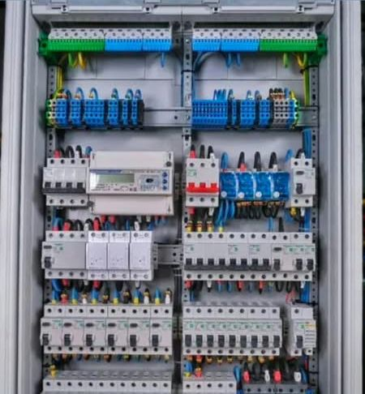
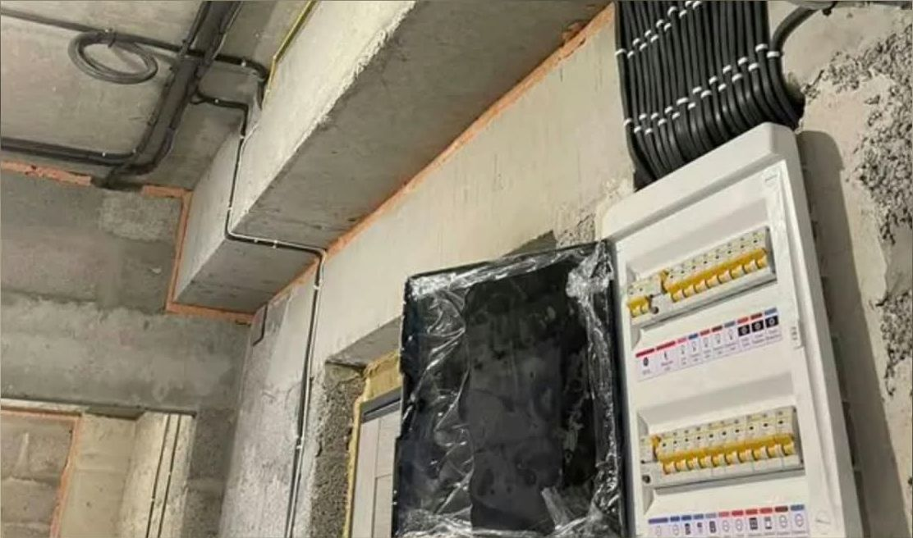

დამიწების მოწყობა და გაზომვაEarthing installation and testing
კარგი დამიწების გარეშე ვერც RCD და ვერც სხვა დაცვა სწორად ვერ იმუშავებს. ვაწყობთ დამიწების კონტურს და შედეგს ვზომავთ.Without good earthing, RCDs and other protection cannot work properly. We install earthing systems and verify them by measurement.
უსაფრთხოების საფუძველიThe basis of electrical safety
დამიწება და კონტურების გაზომვაEarthing & loop measurement
დამიწება დაზიანებისას დენს უსაფრთხო გზას აძლევს და იცავს ადამიანს დარტყმისგან. ბევრ ძველ სახლსა და ბინაში დამიწება საერთოდ არ არის, ან არის, მაგრამ მისი წინაღობა იმდენად მაღალია, რომ რეალურად არ მუშაობს. ამას მხოლოდ გაზომვა აჩვენებს.Earthing gives fault current a safe path and protects people from shock. Many older houses and apartments have no earthing at all, or have one whose resistance is so high that it does not really work. Only measurement can show this.
ვაწყობთ დამიწების კონტურს კერძო სახლისთვის, ობიექტისთვის და სერვერისთვის, და Fluke 1625-ით ვზომავთ დამიწების წინაღობას, დედამიწის კუთრ წინაღობას და მარყუჟს. შედეგებს ოფიციალურ აქტში ვაფორმებთ, რაც ხშირად ობიექტის ჩაბარებისთვის ან სამედიცინო აპარატურისთვის არის საჭირო.We install earthing systems for private houses, commercial sites and server rooms, and use a Fluke 1625 to measure earth electrode resistance, soil resistivity and loop impedance. Results go into an official report, often required for handover or for medical equipment.



რას მოიცავსWhat is included
სამუშაოს შემადგენლობაScope of work
- დამიწების კონტურის მოწყობაEarthing system installation
- დამიწების წინაღობის გაზომვაEarth electrode resistance
- დედამიწის კუთრი წინაღობაSoil resistivity
- მარყუჟის წინაღობაLoop impedance
- RCD-ს შემოწმებაRCD testing
- ოფიციალური აქტიOfficial report
როდის დაგვიკავშირდეთWhen to call us
ტიპური სიტუაციებიTypical situations
- კერძო სახლი დამიწების გარეშეA private house with no earthing
- ტექნიკა „ურტყამს“ დენსAppliances give a shock
- RCD-ის დაყენება იგეგმებაYou plan to fit an RCD
- სერვერი, სამედიცინო ან სენსიტიური ტექნიკაServers, medical or sensitive equipment
- ობიექტის ჩაბარებისთვის აქტი გჭირდებათYou need a report for handover
- ელვამრიდის სისტემაA lightning protection system
როგორ ვმუშაობთHow we work
ოთხი მარტივი ნაბიჯიFour simple steps
- 01დარეკვა ან შეტყობინებაCall or message
მოგვიყევით, რა გჭირდებათ, და შევათანხმოთ დრო.Tell us what you need and we agree a time.
- 02დათვალიერება და გაზომვაInspection and testing
ობიექტზე ვზომავთ და ვადგენთ ზუსტ მიზეზს ან საჭირო სამუშაოს.On site we measure and pin down the exact cause or scope.
- 03შეთანხმება და სამუშაოAgreement and work
ფასს და ვადას წინასწარ გეუბნებით, შემდეგ ვასრულებთ სამუშაოს.We confirm price and timing up front, then do the work.
- 04ჩაბარება და გარანტიაHandover and warranty
ვამოწმებთ შედეგს, გადმოგცემთ სქემას ან აქტს და გაძლევთ გარანტიას.We verify the result, hand over a schematic or report and give a warranty.
საორიენტაციო ფასებიIndicative prices
ელექტროუსაფრთხოების V ჯგუფის დაშვება · Fluke-ის აპარატურა · ევროპული სტანდარტები · გარანტიაGroup V electrical safety qualification · Fluke instruments · European standards · Warranty
ხშირი კითხვებიFAQ
კითხვები და პასუხებიQuestions and answers
სხვა კითხვა გაქვთ? დაგვირეკეთ.Another question? Give us a call.
+995 500 05 58 59როგორ გავიგო, მაქვს თუ არა დამიწება?How do I know if I have earthing?
სამპოლუსიანი როზეტი ჯერ კიდევ არ ნიშნავს, რომ დამიწება მუშაობს. ზუსტად ამის დადგენა მხოლოდ გაზომვით შეიძლება: ვამოწმებთ, უერთდება თუ არა დამიწების სადენი კონტურს და რა წინაღობა აქვს მას.A three-pin socket does not mean the earth works. Only measurement can tell: we check that the earth conductor reaches an electrode and what its resistance is.
რამდენ ხანს გრძელდება დამიწების მოწყობა?How long does installing earthing take?
კერძო სახლისთვის ჩვეულებრივ ერთი სამუშაო დღე, თუმცა ეს ნიადაგზე და ობიექტის ზომაზეა დამოკიდებული.For a private house it is usually one working day, although it depends on the soil and the size of the site.
რატომ გავზომოთ დედამიწის კუთრი წინაღობა?Why measure soil resistivity?
სხვადასხვა ნიადაგი დენს სხვადასხვანაირად ატარებს. ეს გაზომვა გვეუბნება, რამდენი ელექტროდი და რა სიღრმე სჭირდება კონტურს, რომ საჭირო წინაღობა მივიღოთ.Different soils conduct current differently. This measurement tells us how many electrodes and what depth the system needs to reach the required resistance.
დაგეგმეთ სამუშაო ან გაზომვაPlan your project or test
დაგვირეკეთ, მოგვიყევით ობიექტზე და შევათანხმოთ დათვალიერების დრო.Call us, tell us about the site, and we will arrange a visit.